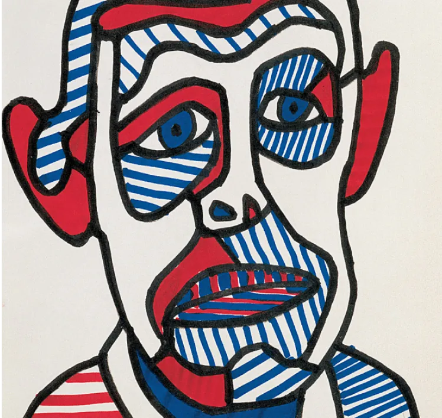

Exposition L'art Brut
Dates de l'exposition : du 13 avril au 23 juin 2023
Lieu de l'exposition : Fondation Cartier, 261 Bd Raspail, 75014 Paris
Horaires d'ouverture : Tous les jours de 11h à 20h, sauf le lundi. Nocturne le mardi, jusqu'à 22h. La fermeture des salles débute à 19h45 (21h45 les mardis).
Jean Dubuffet Autoportrait
C'est en 1945, après un voyage en Suisse, que Jean Dubuffet emploie ce therme pour la première fois. Il désigne les œuvres réalisées par des marginaux ou des internés d'asile
Les œuvres d'Art Brut sont réalisées par des créateurs autodidactes, des marginaux retranchés dans une position d'esprit rebelle ou imperméables aux normes et valeurs collectives. Ils conçoivent un univers à leur propre usage sans ne se préoccuper ni de la critique du public ni du regard d'autrui, de la reconnaissance ou d'une quelconque approbation.
L'exposition
- Normal : 11€
- Réduit : 7,50€
- 13 - 25 ans : 5€
- Fondation Cartier Pass : 18€ - 50€
- -13 ans, Laissez-passer annuel, carte Icom, carte de presse, carte d'invalidité, Fondation Cartier Pass, Etudiants : Gratuit